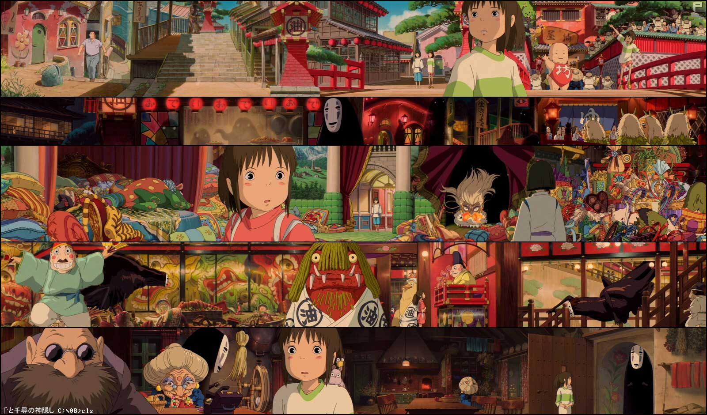
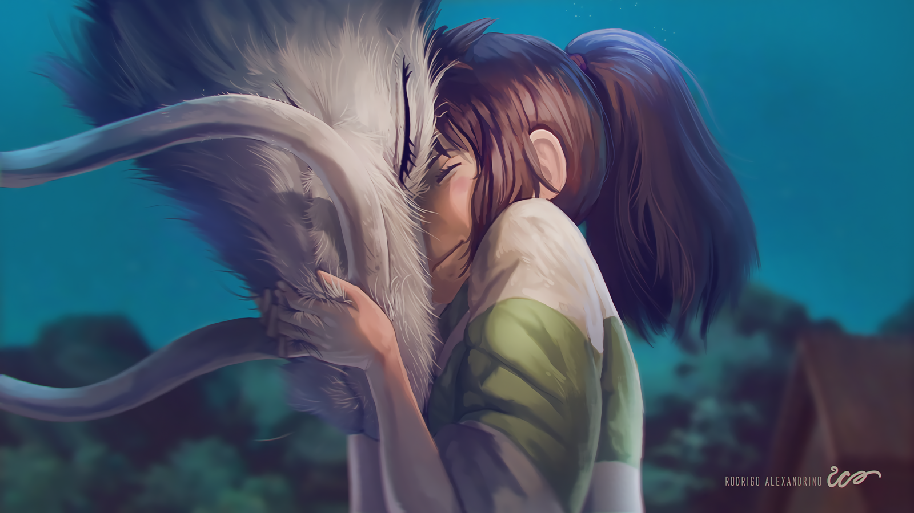
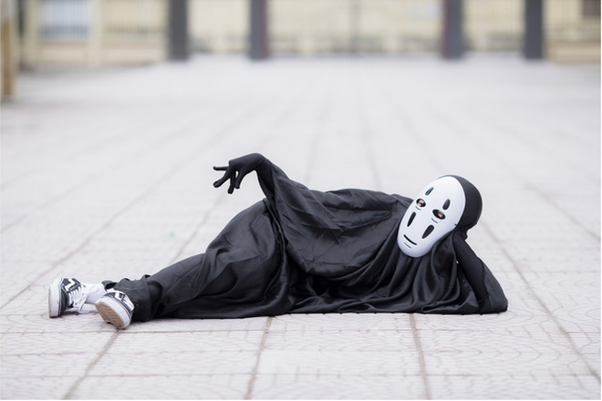
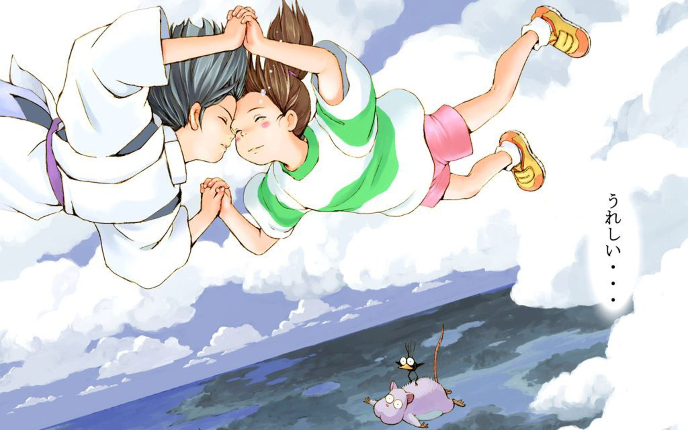

Thông tin phim
Spirited Away
Đạo diễn:
Miyazaki Hayao
Sản xuất
Suzuki Toshio
Cốt truyện
Miyazaki Hayao
Tại sao mình lại chọn Spirited Away và tại sao mình lại lấy típ là phim hoạt hình cho mọi lứa tuổi? Đây có lẽ được coi là 1 trong những phim hoạt hình kinh điển của Ghibi Studios- hãng sản xuất phim thể loại Anime của Nhật, ngoài 1 số phim nổi tiếng trước đó Mononoke princess và My neighbor is Totoro... Spirited Away có tên gốc là Sen to Chihiro no Kamikakushi, phiên bản tiếng việt là Vùng đất linh hồn.
Biết đến phim và xem phim sau khi phim đã thành rất thành công không chỉ tại Nhật Bản mà còn đạt doanh thu 274 triệu đô la Mỹ trên toàn thế giới, dành được nhiều giải thưởng như Oscar hay Gấu vàng, thế nên cái tên mình được nghe đến nhiều nhất là Spirited Away và mình cũng thích cách đặt tên này nhất trong 3 tựa phim vừa kể trên. Bởi có lẽ nó gợi ra trong mình nhiều suy nghĩ hơn cả.Có quá nhiều lời khen ngợi dành cho 1 bộ phim hoạt hình. Và phải công nhận là phim đã để lại ấn tượng rất sâu trong lòng khán giả. Lần đầu tiên xem phim mình bị cuốn hút bởi các tình tiết và nhân vật trong phim, đến tận khi phim kết thúc, cảm xúc lúc đó của mình là tò mò và khó hiểu. Như mình đã đề cập ở trên, đây là phim hoạt hình cho mọi lứa tuổi.Tóm tắt qua nội dung chính
Phim xoay quanh câu chuyện về cô bé 10 tuổi Chihiro. Trên chiếc xe ô tô chở cả gia đình về một làng quê (gồm có Chihiro và bố mẹ), cô bé Chihiro đang rất buồn vì phải chuyển nhà, xa bạn bè và cuộc sống mà cô bé đã quen thuộc, thì lại phải đối mặt với một tình huống hoàn toàn mới, khi bố mẹ em đi lạc vào một con đường lạ, xung quanh có khá nhiều đền đá , băng qua một đường hầm nhỏ, một công viên giải trí bỏ hoang (theo bố mẹ Chihiro nghĩ như vậy) và cuối cùng là vùng đất linh hồn. Bố mẹ Chihiro đã không cưỡng nổi hương vị của những món ăn tại đây mà không biết rằng đó là đồ ăn của các vị thần, vì thế họ bị biến thành heo và cuộc phiêu lưu của Chihiro bắt đầu, cô bé phải làm gì để cứu được gia đình của mình.  Rong chuyến hành trình đầy bất ngờ ấy, Chihiro đã gặp mụ phù thủy Yubaba. Bà ta cai quản vùng đất linh hồn và kiếm sống bằng việc mở ra một nơi sinh hoạt giải trí cho 8 triệu vị thần. Yubaba lấy đi tên của mọi người và dần dần họ quên đi tên thật của mình, suốt đời làm việc cho bà ta. Ví dụ như Sen là tên của Chihiro sau khi đã ký một hợp đồng “lao động” với mụ phù thủy này. Đây là điểm mình thấy khá thích trong phim. Tại sao không đơn thuần là xóa đi ký ức của họ, thôi miên bằng phép thuật hay gì khác..... mà lại là lấy đi tên của họ. Mình nghĩ có lẽ với mỗi người, tên chính là một trong những đặc điểm cơ bản, quan trọng nhất phân biệt người này với người khác và khi con người chẳng thể nhớ ra tên của mình thì cũng chính là họ đang sống với một con người khác, không phải bản thân họ. Chi tiết Yubaba nắm giữ tên của Chihiro vào lòng bàn tay-rất đặc biệt. Đây chính là một sự cướp đoạt, đơn giản nhưng trắng trợn. Nhưng cũng trong cuộc hành trình giải cứu cha mẹ ấy, Chihiro không hề đơn độc, cô bé đã gặp được vô số những người bạn, đầu tiên là Haku-cậu bé phù thủy, được coi là pháp sư ở vùng đất linh hồn, là người bạn đồng hành từ đầu đến cuối phim. Rồi đến những người bạn khác như Kamaji-ông già chuyên pha chế dược liệu hay Rin-cô hầu làm nhiệm vụ dọn dẹp, phục vụ khách; Zeniba-chị em sinh sôi với Yubaba; Vô diện hay Boh..v..v...Cái hay của Spirited Away là ở chỗ, nó là một bộ phim hoạt hình đúng nghĩa cho lứa tuổi tầm 10-14. Nhân vật chính là trẻ con, câu chuyện đậm màu sắc huyền bí, hấp dẫn, có phù thủy, có các vị thần, có phép thuật, lại không mất đi tính hồn nhiên đúng tuổi. Trong phim có đến 3, 4 cảnh Chihiro bị ngã vì những lý do rất buồn cười, hay cảnh 1 con ếch ngất đi và Chihiro phải trợn mắt khi phải phục vụ một vị thần bốc mùi, rất sinh động và gần gũi... Được biết, để dàn dựng được một khung cảnh trong phim như vậy, Miyazki và các đồng nghiệp đã vẽ các nhân vật của họ bằng tay, qua đó mới thấy được những người làm phim đã tâm huyết với “đứa con tinh thần” của họ thế nào. Và mình cũng rất thích cách làm phim như thế này, không có quá nhiều lời thoại nhưng lại trau chuốt đến từng chi tiết nhỏ và từ đó cái hay của phim cũng là ở chỗ, mỗi người xem sẽ đều nhìn thấy một thông điệp gì đó mà phim muốn truyền tải, theo những cách riêng của họ. Sẽ chẳng tự nhiên Spirited Away lại rinh về nhiều giải thưởng đến thế. Và chúng ta-những khán giả yêu điện ảnh chỉ cần làm một việc rất đơn giản, đó là để tâm hồn ta được bay bổng và thoải mái trong thế giới tưởng tượng của Miyazaki.  Nói về nhân vật yêu thích, Vô diện là nhân vật mình thấy hứng thú nhất trong phim. Chính xác là hứng thú. Xuất hiện ngay từ đầu, không hề có một lời giới thiệu hay giải thích, Vô diện như một hồn ma bám theo Chihiro. Cái cách mà Vô diện đi vào phim, đã gợi lên trí tò mò, gần như là nét tính cách bản chất ở con người (đây có lẽ là khả năng nắm bắt tâm lý khán giả của Ghibi, nhất là đối tượng chính của phim là trẻ em). Ngoại hình của Vô diện đơn giản, chỉ đeo mặt nạ vong hồn ( gần giống noh của Nhật Bản), thân hình trong suốt. Vô diện gợi ra rất nhiều suy tư về con người. Với chiếc mặt nạ là khuôn mặt vui vẻ nhưng đằng sau đó lại là một tâm hồn cô đơn, khát khao được yêu thương một cách thật lòng. Vì thế khi Chihiro chỉ đơn giản là để Vô diện vào nhà tắm công cộng- nơi cô bé làm việc, thì Vô diện đã hết lòng giúp đỡ cô bé, như lấy thẻ bài cho cô, yêu cầu được gặp Chihiro và cho cô bé rất nhiều vàng. Vô diện có vẻ ngoài hiền lành nhưng trước lòng tham của người khác, chỉ muốn kiếm thật nhiều vàng từ hắn thì Vô diện bỗng biến thành một con quỷ thật sự. Điều duy nhất làm Vô diện trở nên tốt bụng là được đối xử bằng lòng tốt của Chihiro.  Cũng phải nói thêm điểm cộng nữa cho Spirited Away là về phần âm nhạc. Thực sự mình vẫn thích những phim nào mà đạo diễn hay nhà sản xuất đầu tư vào âm nhạc trong phim. Hisaishi Joe là một nhà soạn nhạc, nhạc trưởng nổi tiếng. Ông viết nhạc cho tất cả các tác phẩm của Miyazaki. Trong vùng đất linh hồn có đến 21 tracks cho phim là của Hisaishi và chỉ có ca khúc phát cuối phim Always with me là do Kimura Youmi thể hiện. Đúng như Miyazaki nói, bài hát đã truyền cảm hứng cho ông và mình cũng thấy nó phù hợp với phim đến lạ kỳ, cả ca từ và giai điệu Với một cốt truyện đơn giản và dường như với cách nghĩ phim hoạt hình chỉ dành cho trẻ em (thời điểm phim phát hành là năm 2001) thì Spirited Away đã đưa đến cho người xem những cái nhìn sâu sắc về xã hội và con người. Một xã hội phức tạp, tranh đấu ẩn sau cái vẻ lộn xộn của nhà tắm công cộng, những con người tham lam và lợi dụng.Thế nhưng, đã là con người thì sẽ bao gồm cả những mặt tốt và mặt xấu. Vì như Yubaba–trong vai một phù thủy phản diện, bóc lột người khác, biến họ thành heo; ham tiền bạc, phú quý, nhưng lại hết lòng yêu thương và chiều chuộng cậu con trai bé bỏng của mình là Boh. Và có thêm một điểm nữa đáng ghi nhận ở nhân vật này là bà ta khá tôn trọng luật lệ. Điển hình có một số câu như “ nếu không vì lời thề vớ vẩn mà ta đã lập rằng sẽ cho bất kỳ người nào hỏi xin viêc” hoặc “ luật là luật”. Hay như ông Kamaji, một ông lão có ngoại hình xấu xí, gớm ghiếc với những cái tay dài lại nhường cho Chihiro tấm vé tàu mà ông đã để dành rất lâu. Hình ảnh ông lão gợi cho mình nghĩ đến những người ông, người bà trong mỗi gia đình, tuy hay mắng mỏ chúng ta nhưng thực sự rất quan tâm chúng ta. Hay như nhân vật Rin, cô ấy gợi cho mình nghĩ đến hình ảnh những người anh, người chị. Ban đầu Rin từ chối giúp đỡ Chihiro nhưng sau đó lại hướng dẫn để hòa nhập với cuộc sống phức tạp ở nhà tắm công cộng. Và một cậu bé Boh có tính cách khó chịu của một đứa trẻ được nuông chiều điển hình, cuối cùng lại nói với mẹ của mình “ nếu mẹ làm chị Sen khóc, con sẽ không yêu mẹ nữa”. Đấy là suy nghĩ của mình-một đứa trẻ nhiều tuổi. Còn với những cô bé, cậu bé, phim vẫn toát lên được tinh thần dũng cảm, sự thông minh để vượt qua khó khăn của Chihiro để cứu được bố mẹ mình; tình yêu, tình bạn, lòng biết ơn và tinh thần đoàn kết. Đó sẽ là những giá trị khơi gợi lên tình yêu thương và lòng tốt ở những đứa trẻ và vẽ ra trước mắt chúng một thế giới đầy màu sắc.Miyazaki đã phác họa những nhân vật của ông trên màn ảnh và thông qua cá tính của họ để phác họa xã hội. Và cho dù, cái xã hội ấy có phức tạp đến thế nào, thì những điều tốt và điều xấu vẫn luôn cùng nhau tồn tại. Xin trích dẫn một câu mà ông đã nói: “Đây không phải là một câu chuyện kể về sự trưởng thành của các nhân vật, đây là câu chuyện mà ở đó các nhân vật của chúng ta tìm thấy được thứ gì đó vốn đã nằm sẵn trong tâm hồn họ, được bộc lộ ra khi họ ở trong những hoàn cảnh nhất định. Tôi muốn những người bạn trẻ của mình sống như vậy và tôi nghĩ rằng họ, cũng như tôi, cùng có mong ước như thế “ .Thế mới thấy phim hoạt hình Nhật nó nhiều ý nghĩa và sâu sắc. Thực chất, anime ở Nhật đã đủ phong phú rồi, thế nhưng Spirited Away vẫn là một bộ phim khó quên đối với những người đã từng xem nó, gìn giữ nó như một kỷ niệm của tuổi thơ và nghĩ về nó khi ta đủ lớn hơn để có thể nhận ra nhiều điều trong cuộc sống. Hồi nhỏ xem thấy hay rồi giờ hiểu còn hay hơn
Bạn BCó ai biết phim nào như thế nữa giới thiệu mình với
Bạn CChắc mai phải mở lên coi lại mới được